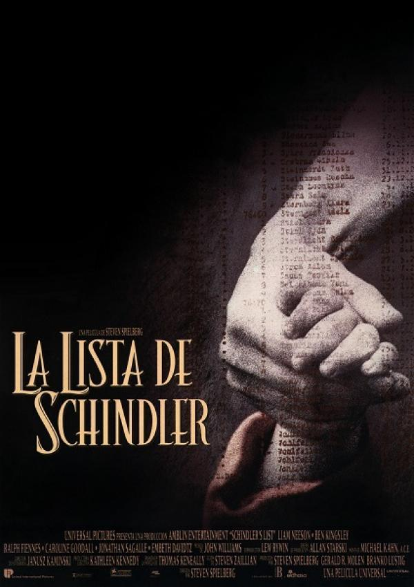
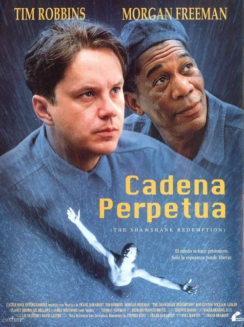
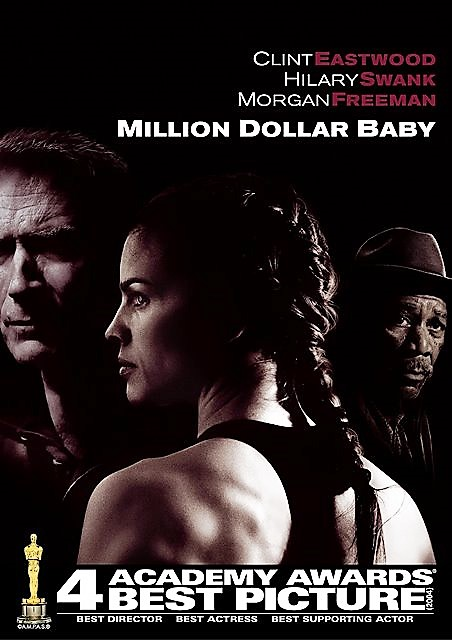

DRAMA
Handia

1 ordu eta 56 minutu
1843an, Martin etxera itzuli zen Lehen Karlistaldian borrokatu ondoren. Gipuzkoako bere familiaren baserrira iristen denean, harriduraz ohartzen da bere anaia txikia, Joaquin, ohi baino askoz altuagoa dela. Martin ziur dago bere anaia zirkuko pertsonaia bihur dezakeela, eta mundu guztiak ikusi nahiko duela. Bi anaiak bidaia luze batean murgilduko dira Europan zehar, eta anbizioak, diruak eta ospeak familiaren patua aldatuko dute betiko.
Autorea: Manuel Martin
La lista de Schindler
3 ordu eta 17 minutu
Schindlerren zerrenda (jatorrizko izenburua: Schindler 's List) fikziozko eleberri historikoan oinarritutako drama historikoaren generoko 1993ko film estatubatuar bat da. Schindler alemaniar etniako enpresaburuaren bizitzako aldi bat kontatzen du filmak, Bigarren Mundu Gerran Holokaustoan mila judu poloniar baino gehiago hiltzetik salbatu zituena bere fabriketako langile gisa erabiliz.
Autorea: Thomas Keneally
Cadena perpetua
2 ordu eta 22 minutu
Andrew Dufresne errugabea da eta bere emaztearen hilketa leporatzen diote. Biziarteko kartzela-zigorra jaso ondoren, Maineko Shawshank espetxera bidali zuten. Urteak aurrera joan ahala, Andrewk zentroko zuzendariaren konfiantza eta beste konbiktoen errespetua lortuko du, batez ere Red, mafiako buruarena.
Autorea: Stephen King
Million Dollar Baby
2 ordu eta 13 minutu
Frankie Dunn Maggie Fitzgerald entrenatzen amaitzen duen entrenatzailea da, nahiz eta izaera zakarra eta neskak ez entrenatzeko araua izan. Maggie boxeolaria izan nahi duen neska da, eta edozer egiteko prest dago hori lortzeko.
Autorea: Paul Haggis